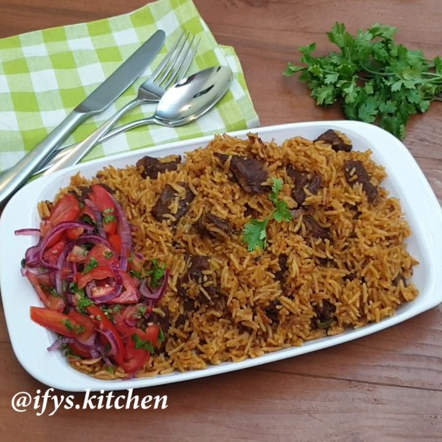

Pilau Recipe

Pilau
Below is a recipe for making the best pilau dish. You will need a few ingredients to make this yummy dish.
Ingredients
- 2 cups of rice
- Boiled half a kg of beef
- A satchet of pilau masala
- Dark Soysauce
- 3 big chopped red onions
- quarter cup of oil
- 4 cups of water
- Salt for taste
- 3 big chopped tomatoes
- A satchet of tomato paste
Steps
- In a pot, put the chopped onions.
- Add oil to the onions and allow them to fry till brown.
- Add the chopped tomatoes and the tomatoe paste and stirr till the tomatoes are fully mashed.
- Put the pilau masala as you stirr.
- Add the boiled beef as you continue to stirr.
- Add salt and a quarter cup of the dark soysauce and continue stirring.
- When the meat is tenderized and completely mixed up with the rest of the ingredients, add the rice and stirr.
- Finally add the water, stirr, reduce heat and cover the pot with the lid and wait.
- When the water is fully dried, serve while hot and enjoy.
Home